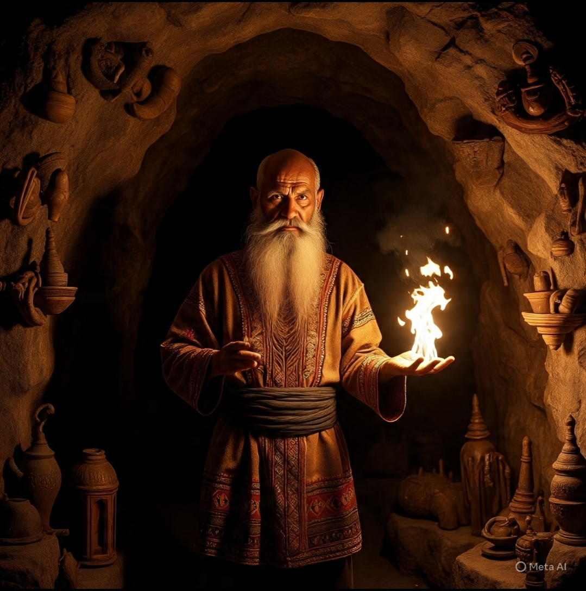
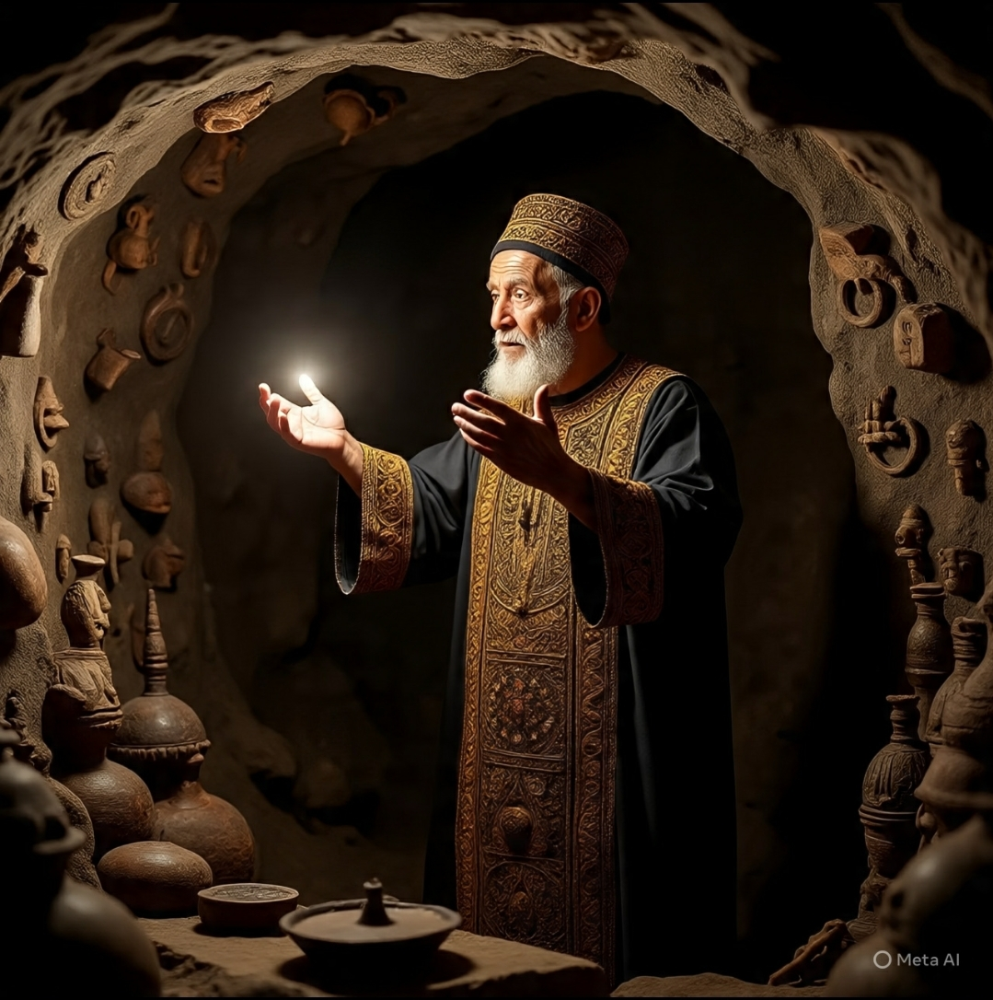

Gabatarwa
A kowanne zamani akwai sirrika da asrar da suka kasance a boye, amma waɗanda suka mallake su suna samun nasara da natsuwa a rayuwarsu. Wannan shafi ya ƙunshi Sirrin Yasin Don Mallaka Mai Karfin Gaske 2025, wanda aka tanada domin masu neman qauna, soyayya, da mallakar zuciyar duk wanda ake bukata. Wannan sirrin yana daya daga cikin sirrukan da mun jarrabashi kuma munga faidarshi, sai dai mafi yawan lokuta abunda yake damun mutane shine idan sukayi wani sirri baya tashi shine, rashin yaqini da tsayarda zuciya waje daya wannan yana cikin babban matsalar. ku tsayarda zuciyarku waje daya saboda samun ingantaccen biyan bukata
Dalilin Amfani Da Suratul Yasin
Suratul Yasin ta kasance zuciyar Alkur’ani, kuma tana ɗauke da asrar na mallaka da karfin ikon Allah. Idan mutum ya tsarkake zuciyarsa, ya karanta wannan sirri yadda ya dace, to duk wata buƙata ta halal zata kasance mai sauƙi gare shi.

Yadda Ake Amfani Da Sirrin
- Da Farko Anayin Istigfari Kafa 100.
- Sai Kuma Salatin Annabi Kafa 100.
- Sai Kuma Lailaha illallah Kafa 100.
- Sai A fara Karanta Yasin, Amma Duk Mubin Za a karanta wannan ayar:
- Wa'alkaitu Alaika Muhabbatan Minni kafa 823.
- Sai Kuma Ya Wadudu Kafa 313, Duk mubin haka za ayi, yasin din kafa 3 ko 7 za ayi na tsawon kwana 7 ko 14, Insha Allahu zakasha mamaki.

Amfanin Sirrin Nan
– Zai taimaka wajen samun karɓuwa a zuciyar wanda ake so.
– Zai buɗe hanyoyin arziki da damar halal.
– Zai kareka daga hassada da sharrin makiya.
– Zai natsar da zuciya da ƙarfafa imani.